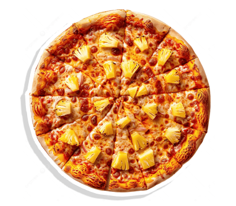

0/10
Score
What is this Question?
Correct Score +1
Wrong
Finish!
Total Score
0/10
Rank
D
The History of Pizza
1. Ancient Origins
Early forms of pizza date back to ancient civilizations such as the Egyptians, Greeks, and Romans, who ate flatbreads topped with herbs, oils, and cheese.
In the 6th century BCE, Persian soldiers reportedly baked flatbreads with cheese and dates on their shields over fire — an early concept of portable pizza.

2. Birth of Modern Pizza – Naples, Italy (1700s–1800s)
Naples is widely recognized as the birthplace of modern pizza. In the 18th century, working-class Neapolitans began adding tomatoes to flatbread, creating what we now know as pizza.
These pizzas were inexpensive and sold on the streets as fast food for the poor.
3. Margherita Pizza (1889)
In 1889, Queen Margherita of Savoy visited Naples. Chef Raffaele Esposito created a pizza using tomatoes, mozzarella, and basil to represent the Italian flag. He named it Pizza Margherita.

4. Pizza in America (Early 1900s)
Italian immigrants brought pizza to the United States, especially in cities like New York and Chicago.
The first documented U.S. pizzeria was Lombardi's, which opened in New York City in 1905.
5. Post-WWII Boom
After World War II, returning American soldiers who had been stationed in Italy popularized pizza in the U.S. It spread beyond Italian-American communities and entered mainstream culture.
6. Global Expansion (Late 20th Century–Today)
Pizza chains like Domino’s, Pizza Hut, and Papa John’s helped spread pizza around the world. Regional varieties emerged, including:
- Chicago Deep Dish (USA)
- Okonomiyaki (Japan)
- Lahmacun (Middle East)
- Hawaiian Pizza (Canada)
Summary
Pizza evolved from humble flatbreads to a globally loved dish. From Naples to New York to Tokyo, it reflects centuries of culinary adaptation and cultural exchange.
Types of Pizza
1. Neapolitan Pizza (Italy)
|
2. New York-Style Pizza (USA)
|
3. Chicago Deep-Dish Pizza (USA)
|
4. Sicilian Pizza (Italy / USA)
|
5. Detroit-Style Pizza (USA)
|
6. California-Style Pizza (USA)
|
7. Greek Pizza (USA)
|
8. St. Louis-Style Pizza (USA)
|
9. Hawaiian Pizza (Canada)
|
10. International Varieties
|
||
Shows about Pizza

Really Dough?
Really Dough?" is a web series from Thrillist where Mark Iacono, a pizza traditionalist, and Scott Wiener, a pizza enthusiast, explore the definition of pizza by trying unconventional toppings and preparations. The show highlights their contrasting views, with Mark adhering to strict rules (sauce, cheese, dough) and Scott embracing creative interpretations. The series delves into whether these experimental pizzas, like kimchi pizza or deep-dish, truly qualify as pizza.
 |
 |
 |
 |
 |
 |